每年，印度海滨城市普里都会聚集上百万的朝圣者，他们来到这里庆祝印度教中最重要的节日之一——乘车节。在这个节日里，三辆狂欢节花车般大小的巡游车会经过小镇。我来这里旅游的时候，街上都是敲钹、念咒的信徒，还有留着长胡子的赤脚圣人，以及穿着时尚T恤衫和鲜艳莎丽的印度中产游客。那是仲夏时节，季风刚刚到来，在倾盆大雨停歇的间隙，节日的工作人员会向路人的脸上喷水降温。在印度的其他地方也同时举行着乘车节游行，但普里是节日的焦点，这里的车是最大的。
当地的圣人——普里的商羯罗查尔雅会站在人群面前祝福他们，此时节日才算正式开始。商羯罗查尔雅是印度教中最重要的圣人之一，是具有1000多年历史的僧侣组织的首领。他也是我去普里的原因。除了是一名精神领袖，商羯罗查尔雅也是一位数学家。而我也是一个寻求点化的朝圣者。
我注意到印度人对数字的使用有些不寻常。在酒店的接待处，我拿起一份《印度时报》。随着报纸的角被一阵阵的金属风扇吹得飘起来，头版头条的文字吸引了我的眼球：
比政府想象的
多5千万（5crore）印度人
Crore是印度英语中的一个词，意思是“一千万”，所以文章是说，印度刚刚发现了新增的5000万公民，这个数字与英国的人口大致相当。一个国家竟然可以忽略这么多人，这真令人吃惊，但它只占印度总人口的不到5%。但是我对crore这个词更困惑。印度英语中有一些表示大数量的数词，不同于英式或美式英语。例如，他们不使用million（百万）一词。100万被表示为ten lakh（10个十万），lakh就是十万。由于“百万”这个词在印度并不存在，奥斯卡获奖影片《贫民窟的百万富翁》（Slumdog Millionaire）在印度上映时叫作《贫民窟的千万富翁》（Slumdog Crorepati）。印度人会说一个非常富有的人拥有千万美元或卢比，而不是百万。英/美数词在印度的表示方法如下：
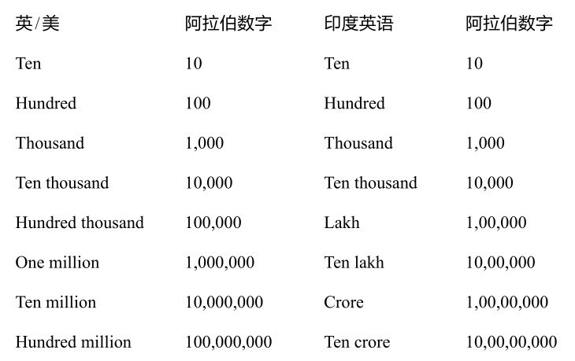
可以注意到，超过1000时，印度人在每两个数字后用一个逗号分隔，而在世界的其他地方，人们通常在每三个数字后用一个逗号分隔。
使用lakh和crore是古印度数学留下的惯例。这两个单词来自印地语的lakh和karod，而印地语的这两个词又来自梵语的laksh和koti。在古印度，赋予大数量一个新词不仅出于科学的需要，也出于宗教的需要。例如，在《普曜经》（Lalitavistara Sutra，一种至少可追溯到4世纪初的梵文文本）中，佛陀被要求表达大于100 koti的数字。他回答：
100 koti是ayuta，100 ayuta是niyuta，100 niyuta是kankara，100 kankara是vivara，100 vivara是kshobhya，100 kshobhya是vivaha，100 vivaha是utsanga，100 utsanga是bahula，100 bahula是nagabala，100 nagabala是titilambha，100 titilambha是vyavasthanaprajnapati，100 vyavasthanaprajnapati是hetuhila，100 hetuhila是karahu，100 karahu是hetvindriya，100 hetvindriya是samaptalambha，100 samaptalambha是gananagati，100 gananagati是niravadya，100 niravadya是mudrabala，100 mudrabala是sarvabala，100 sarvabala是visamjnagati，100 visamjnagati是sarvajna，100 sarvajna是vibhutangama，100 vibhutangama是tallakshana。
跟当代印度一样，佛陀以100为倍数向上数数。因为koti是1000万，所以tallakshana的值是1000万乘以23次100，算出来是10后面加上52个零，即1053 。这是一个极大的数字，事实上，如果你以米为单位测量整个可观测宇宙的长度，然后把这个数平方，答案大概就在1053 左右。
但佛陀并没有就此止步，他才刚刚开始。他解释说，他只描述了tallakshana计数系统，在它上面还有另一个dhvajgravati系统，由相同数字体系组成。在此之上，还有一个dhavjagranishamani系统，它同样有24个数词。事实上，除此之外还有6个系统——当然，佛陀列出的都是完美的。最后一个系统中的最后一个数字等于10421 ，也就是1后面跟着421个0。
让我们花些时间考虑一下这个数字有多大。宇宙中大约有1080 个原子。如果我们取最小的可测量的时间单位，也就是普朗克时间（它是一秒的1043 分之一），那么自大爆炸以来，大约也就过了1060 单位的普朗克时间。如果我们把宇宙中的原子数乘以大爆炸以来的普朗克时间，这个数字能让每个粒子从时间存在开始就获得一个独特的位置——我们仍然只到达了10140 的数量级，它仍然远远小于10421 。佛陀的巨大数字没有实际的应用，至少它不能用于计算存在的事物。
佛陀不仅能洞察难以想象的巨大数目，而且也很了解难以企及的微小领域。他解释了一个yojana中有多少原子。Yojana是一个古老的长度单位，大约为10千米。他说，1 yojana等于：
4 krosha，每krosha的长度是
1000弧，每弧的长度是
4腕尺，每腕尺的长度是
2跨度，每跨度的长度是
12指骨，每指骨的长度是
7颗大麦，每颗大麦的长度是
7颗芥末种子，每颗芥末种子的长度是
7颗罂粟种子，每颗罂粟种子等于
1头牛搅起的7粒尘埃，每粒牛搅起的尘埃等于
1只公羊搅起的7粒尘埃，每粒公羊搅起的尘埃等于
1只野兔搅起的7粒尘埃，每粒野兔搅起的尘埃等于
7粒被风吹走的尘埃，每粒被风吹走的尘埃等于
7个微小的尘埃颗粒，每个微小的尘埃颗粒等于
7个极小的尘埃微粒，每个极小的尘埃微粒等于
7个初原子。
事实上，这个估算相当准确。一根手指大约4厘米长。因此，佛陀的“初原子”是4厘米除以7，重复10次，也就是0.04×7-10 米，即0.0000000001416米，这差不多就是一个碳原子的半径。
佛陀决不是唯一一个对极大尺度和极小尺度感兴趣的古印度人。梵文文献中充满了天文数字。印度教的姐妹宗教耆那教的信徒把raju定义为，“如果神每眨一次眼睛时移动100000 yojana，那么他在6个月内能到达的距离”。Palya是一个时间单位，它的定义是“一个巨大的yojana大小的立方体，里面装满了羊毛，如果每个世纪移除一根，清空这个立方体所需要的时间”。对大的（和小的）数字的痴迷在本质上是形而上学的，它是一种探索无限的方式，也是一种处理生命的存在主义的方式。
在阿拉伯数字在国际上通用之前，人类使用过许多记录数字的方法。西方出现的第一批数字符号是刻痕、楔形鸟迹和象形文字。当各个语言发展出了自己的字母表后，人们就开始使用字母来表示数字。犹太人用希伯来语的第一个字母（
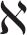
）代表1，用第二个字母（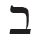
）表示2，等等。第10个字母（ ）是10，之后每个字母都以10为单位递增，数到100后，又以百为单位递增。希伯来语第22个也是最后一个字母（ ）代表400。用字母来表示数字可能令人感到困惑，但它也促进了用数字命理学来计数的方法。例如，希伯来字母代码（gematria）就是把希伯来语单词中的字母所代表的数加起来，然后用这个数字来推测和占卜。希腊人使用了类似的系统，第一个希腊字母（α）为1，第二个（β）是2，以此类推，他们的第27个字母（ ）代表900。古希腊的数学文化是古典世界中最先进的，不过它并没有像印度那样渴望巨大的数字。他们拥有的代表最大数值的数词是myriad（大量的），意思是10000，他们用大写的M表达它。
罗马数字也是按字母顺序排列的，但与希腊人或犹太人的系统不同的是，罗马人的数字系统主要源于古代。代表一的符号是I，这可能来自计数棒上的一个刻痕。5是V，或许是因为它看起来像一只手。还有X、L、C、D和M，它们分别代表10、50、100、500和1000。其他所有数字都是用这7个大写字母表示的。罗马数字系统起源于计数棒，这使它成为一种非常直观的数字书写方式。罗马数字系统的效率也很高，它只用了7个符号，而希伯来语需要22个，希腊语则有27个。罗马数字在长达1000多年的时间内主导了欧洲的数字系统。
但罗马数字却不太适合做算术。我们来计算一下57×43。最好的方法是用一种被称为“埃及乘法”或“农民乘法”的方法，它至少可以追溯到古埃及。这个方法虽然慢，但十分巧妙。
我们首先把一个数拆解成2的幂（如1、2、4、8、16、32等）之和，然后再列出一个表，计算另一个数的倍数。比如，我们想计算57×43，我们可以拆解57，然后列出一张43的倍数表。我在这里先用阿拉伯数字来说明它的步骤，稍后再转换成罗马数字。
拆解：57=32+16+8+1
倍数表：
1×43=43
2×43=86
4×43=172
8×43=344
16×43=688
32×43=1376
57×43等于倍数表中与拆解出的数所对应的数字的和。这听起来有点儿拗口，但相当直截了当。拆解出来的数是32、16、8和1。在表中，32对应1376，16对应688，8对应344，1对应43。因此，我们可以将原来的乘法重写为1376+688+344+43，等于2451。
现在我们把它们换成罗马数字：57是LVII，43是XLIII。拆解过程和倍数表就变为：
LVII=XXXII+XVI+VIII+I
和
XLIII
LXXXVI
CLXXII
CCCXLIV
DCLXXXVIII
MCCCLXXVI
因此，
LVII×XLIII=MCCCLXXVI+DCLXXXVIII+CCCXLIV+XLIII=MMCDLI
通过将计算分解成“可消化”的小块，只使用翻倍和加法，就可以用罗马数字计算乘法了。不过，我们还是得做很多不必要的工作。我之前提到，罗马数字系统是直观而有效的，但现在，我要收回这句话。由于其数字的长度并不体现它的数值大小，罗马数字系统总是与直觉相悖。MMCDLI比DCLXXXVIII大，但使用的数字符号却更少，这违背了常识。而只用7个符号所带来的效率，会因为使用它们的过程过于低效而失去意义。这就导致人们经常需要用长字符串来表示较小的数字：比如LXXXVI使用了6个符号，而等价的阿拉伯数字86只使用了两个符号。
下面我们将上述计算与我们在学校学到的乘法竖式进行比较：
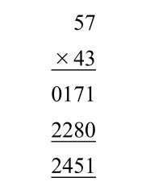
用我们的方法计算更容易、更快，这其中有个非常简单的原因：古代罗马人、希腊人或犹太人都没有代表零的符号。在算术方面，零让一切变得不同。
《吠陀》是印度教的经典著作，口口相传了好几代人，直到2000年前，它被译成了梵文。在《吠陀》中有一段关于祭坛建造的经文，列出了如下数字：
Dasa（十） 10
Sata（百） 100
Sahasra（千） 1000
Ayuta（万） 10000
Niyuta（十万） 100000
Prayuta（百万） 1000000
Arbuda（千万） 10000000
Nyarbuda（亿） 100000000
Samudra（十亿） 1000000000
Madhya（百亿） 10000000000
Anta（千亿） 100000000000
Parârdha（万亿） 1000000000000
给10的幂命名可以非常有效地描述巨大的数字，这为天文学家和占星家（可能还有祭坛建造者）提供了合适的词汇，来描述他们在计算中用到的巨大数量。这就是印度天文学在那时领先的原因之一。想想数字422396，印度人可以从右边最小的数字开始，从右向左依次写出“6，9个dasa，3个sata，2个sahasra，2个ayuta，4个niyuta”。在此基础上，很容易想到可以省略10的幂，因为数字所处的位置已经定义了它的值。换言之，上面的数字可以写成：6，9，3，2，2，4。
这种类型的枚举被称为位值系统，我们在前面讨论过。算盘珠子代表的值取决于它在哪一列，同样，上面一列中的每个数字都代表一个值，该值取决于它在列中的位置。然而，位值系统需要“补位数字”的概念。例如，如果一个数字由2和3个sata组成，没有dasa（即302），就不能写成“2，3”，因为它指的是32。需要一个占位符来让每位数字处在正确的位置上，以表明十位没有数字，印度人用shunya这个词（意思是“无”）来表示这个占位符。上述的数字会被写成“2，无，3”。
印度人并不是第一个引入占位符的。这项“荣誉”可能属于古巴比伦人，他们用六十进制的数字系统，将数字符号排列起来。第一列是个位，下一列是“60位”，再下一列是“3600位”，等等。如果某个数字在该列上没有值，最初是留空。然而，这导致了混乱，所以他们最终引入了一个符号表示没有值。然而，这个符号只用作一种标记。
在采用shunya作为补位数字后，印度人接受了这个想法，并进一步使用它，将shunya变成一个完全独立的数字，也就是零。现在，我们不难理解零是一个数字，但这个想法在那时并不明显。以西方文明为例，即使经过几千年的数学探索，它也没有发展出这个数字。古代社会每天面对着零，但没有看见它，这样一个事实足见印度人实现这概念性飞跃有多伟大。算盘之所以包含了零的概念，是因为它基于位值。例如，当一个罗马人想要表达101时，他会在第一列中推一个珠子来表示100，第二列的珠子不动，表示这里没有十位，然后在第三列中推一个珠子来表示个位1。第二列保持不动，就表达了无的意思。在计算中，珠算师知道，就像他必须认真对待被移动的列一样，他也必须认真对待不动的列。但他从来没有用一个数字或符号表示不移动的列。
在婆罗摩笈多等印度数学家的推动下，零逐渐成为一个真正的数字。婆罗摩笈多在7世纪向我们展示了shunya是如何与其他数字相互作用的：
债务减去shunya仍然是债务
财富减去shunya仍然是财富
Shunya减去shunya是shunya
Shunya减去债务是财富
Shunya减去财富是债务
Shunya和债务或财富的乘积是shunya
Shunya和shunya的乘积是shunya
如果“财富”被视为正数a，“债务”被看作负数-a，婆罗摩笈多写出的内容就是：
-a-0=-a
a-0=a
0-0=0
0-（-a）=a
0-a=-a
0×a=0，0×（-a）=0
0×0=0
数字是作为计算工具和描述数量的抽象符号而出现的。但零不能用来计数，理解它需要抽象思维。然而，数学与实际事物的联系越少，它就越强大。
把零当作一个数字意味着，使算盘成为最佳计算方法的位值系统可以通过书面符号得到最大程度的利用。零还在其他方面促进了数字的发展，比如引导人们“发明”了负数和小数。负数和小数是我们在学校轻松学会的概念，也是我们日常生活中的内在需求，但绝不是不言自明的。古希腊人做出了惊人的数学发现，但他们没有发现零、负数和小数点，这是因为他们对数学的理解本质上是空间性的。对他们来说，“什么都没有”也可以是“某些东西”，这种想法太荒谬了。毕达哥拉斯无法想象出负数，就像他无法想象一个负三角形一样。
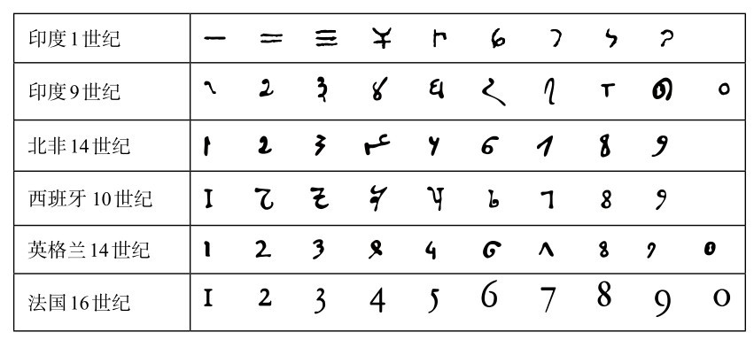
图3-1 现代数字的进化
在古印度所有的数字创新中，也许没有比描述从0到9的词汇更令人好奇的了。表示每个数字的名字还有其他丰富多彩的含义。例如，0是shunya，但它也表示“以太”、“点”、“穴”或“永恒之蛇”。1还表示“地球”、“月亮”、“北极星”或“凝乳”。2还表示“手臂”，3还表示“火”，4还有“外阴”的意思。名字的选择取决于上下文，并符合梵文诗体和韵律的严格规则。例如，下面这段表示数字运算的诗文取自一段古代占星文：
由迦中的月亮拱点
火。真空。骑手。婆薮 [1] 。蛇。海洋，
以及它的亏点
婆薮。火。原始对。骑手。火。双胞胎。
翻译如下：
（在一个宇宙周期中，）月球的拱点（旋转次数是）
三。零。二。八。八。四，（也就是488203）
以及它的亏点
八。三。二。二。三。二。（也就是232238）
每个数字都有一个华丽的代称，一开始可能会让人感到困惑，但实际上这是完全有必要的。在手稿脆弱且容易损坏的历史时期，天文学家和占星学家需要一种备份方法来准确地记住重要的数字。用不同的名字组成诗句来描述一串数字，比重复使用相同的数字名称更容易让人记住。
数字被口口相传的另一个原因是，在印度不同地区出现的数字1到9（我稍后会讲到0）是不一样的。两个人就算不懂对方使用的数字符号，至少可以用文字交流数字。但是，到了公元500年，印度人在数字的使用上变得更加一致，印度已具备了现代十进制数字系统所需的三个元素：10个数字、位值和被广泛使用的零。
由于印度的记数方法易于使用，它被传播到中东，在那里，伊斯兰世界接纳了它，这解释了为什么这些数字符号被错误地称为阿拉伯数字。后来，一个伟大的意大利人莱昂纳多·斐波那契（Leonardo Fibonacci）将这些数字带到了欧洲。斐波那契的姓氏意思是“波那契之子”。斐波那契在贝贾亚（现位于阿尔及利亚）长大，他的父亲在那里担任比萨的海关官员。在那里，他最初接触到了印度数字。斐波那契意识到，印度数字比罗马数字好得多，于是他写了一本关于十进制位值系统的书，叫作《计算之书》（Liber Abaci），这本书出版于1202年。它以一个喜讯开场：
9个印度数字是：
9 8 7 6 5 4 3 2 1
用这9个数字，还有阿拉伯人称为zephyr的符号0，就可以写出任何数字，之后会详细说明。
《计算之书》以前所未有的笔墨，向西方介绍了印度的数字系统。斐波那契在书中展示了一种比欧洲的方法更快、更容易、更优雅的算术方法。长乘法和长除法现在在我们看来似乎很无聊，但在13世纪初，它们可谓技术创新。
然而，并不是所有人都愿意立刻采用新的数字系统。专业的算盘计算员感觉更简单的记数方法威胁到了他们的地位。（他们本应该最早意识到，十进制本质上就是用书写符号表示的算盘。）除此之外，斐波那契的书恰好出现在十字军东征时期，神职人员对任何带有阿拉伯含义的东西都抱有怀疑的态度。有些人甚至认为，新的算术是如此巧妙，恰恰表明它是魔鬼的作品。一些现代单词的词源也能反映当时欧洲人对阿拉伯数字的恐惧。Zephyr一词演变出了zero（零），但也衍生出了葡萄牙语单词chifre，意思是“（恶魔的）角”，还有英语单词cipher，意思是“密码”。有人认为，这是因为使用带有zephyr（零）的数字只能在暗处，它违背了教会的意愿。
1299年，佛罗伦萨禁止使用阿拉伯数字，因为当局认为这些线条圆滑的符号比实心的罗马数字V和I更容易伪造。0很容易就变成6或9，而1可以不露声色地改成7。因此，直到15世纪末，罗马数字才最终被取代，而负数花了更长时间才在欧洲通用。它们直到17世纪才被接受，因为据说负数会被用于计算非法贷款，也就是高利贷，这是对神明的亵渎。然而，在一些不需要计算的地方，比如法律文件、书籍章节和BBC（英国广播公司）节目末尾出现的日期，罗马数字依旧存在。
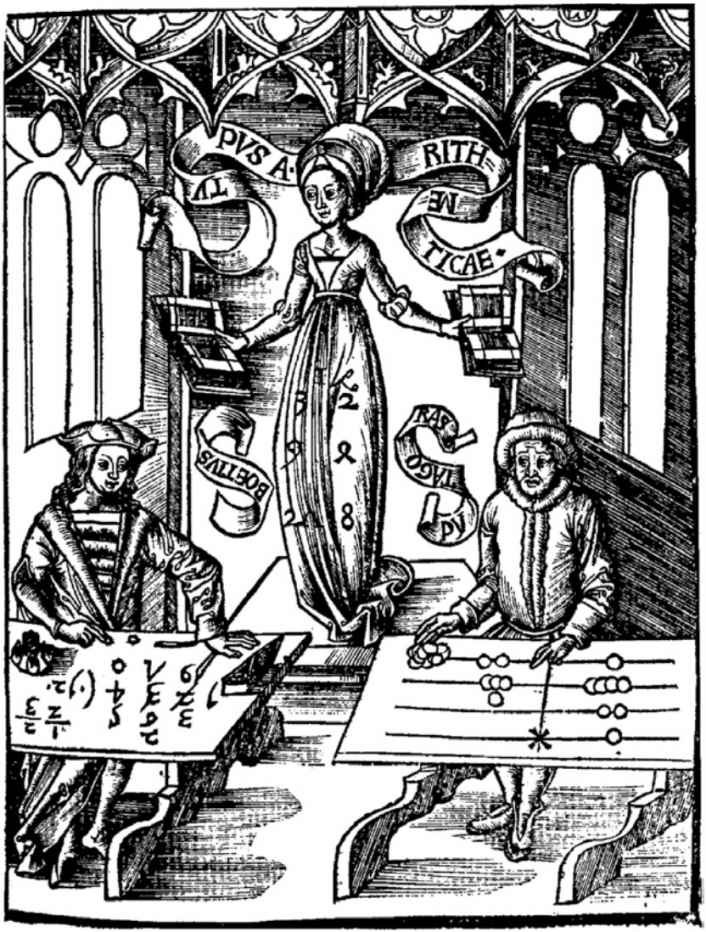
图3-2 算术之神（Arithmetica）在使用阿拉伯数字的波伊提乌和使用计数板的毕达哥拉斯之间进行裁决。她敬慕的目光和裙子上的数字透露出了她的偏好。这幅木版画出自格里戈留斯·赖施（Gregorius Reisch）的《玛格丽塔哲学书》（Margarita Philosophica，1503）
随着人们开始采用阿拉伯数字，算术与几何一样，真正成了数学的一部分。以前算术更多只是商店老板使用的一种工具，而新的系统帮助人们打开了科学革命的大门。
印度对数字世界的更新的贡献是一套算术技巧，它被统称为吠陀数学。20世纪初，一位年轻的印度哲人巴拉蒂·克里希纳·第勒塔季（Bharati Krishna Tirthaji）在《吠陀》中发现了这套技巧，这相当于，一位牧师宣布他在《圣经》中找到了一种解二次方程的方法。吠陀数学基于以下16句格言，或者叫佛经。第勒塔季说，实际上它们并不来自《吠陀》中的某一段，而只能“根据直觉启示”感知到。
1. 比以前的1多了1
2. 全部从9开始，最后从10开始
3. 垂直和交叉
4. 转置和应用
5 .如果《集论》（Samuccaya）是相同的，它是零
6. 如果一个是成比例的，另一个是零
7. 通过加和减
8. 完成或未完成
9. 微分学
10. 通过亏空
11. 具体和普遍
12. 最后一位的余数
13. 最后一个和两次倒数第二
14. 比以前的1少了1
15. 和的乘积
16. 所有乘数
他是认真的吗？是的，他没有开玩笑。第勒塔季是他那个时代最受尊敬的圣人之一。他曾是一名天才儿童，20岁时就获得了梵文、哲学、英语、数学、历史和科学方面的学位，他也是一位颇具天赋的演说家，刚刚成年时就显示出了卓越的才华，他注定会在印度宗教生活中扮演重要的角色。1925年，第勒塔季确实成了商羯罗查尔雅（印度经院哲学家），这是传统印度教社会中一个高级职位，负责主持孟加拉湾奥里萨邦普里的一座全国性的重要寺院。我参观了这里，因为这正是乘车节的中心地点。我希望能够见到现任的商羯罗查尔雅，也就是现在的吠陀数学大使。
在20世纪三四十年代第勒塔季担任商羯罗查尔雅时，他经常周游印度，向数万人布道，布道的内容通常是提供精神指引，但也会推广他的新计算方式。他教授的16句格言被当作数学公式使用。虽然它们听起来可能模棱两可，像工程书籍中的章节标题或数字命理学中的咒语，但实际上它们讲述了特定的规则。其中最直接的是第二条，“全部从9开始，最后从10开始”。每当你计算10的幂，比如1000减去一个数时，就会用到这一条。例如，如果我想计算1000-456，那么我用9减去4，再用9减去5，最后用10减去6。换句话说，前两个数字从9开始，最后一个数字从10开始，答案就是544。（稍后我将介绍其他格言应用在其他情况下的例子。）
第勒塔季把吠陀数学作为礼物散布到全国，他认为，学童通常需要15年才能学会的数学，在格言的帮助下只要8个月就能学会。他还说，这个系统不仅覆盖算术，还可以扩展到代数、几何、微积分和天文学领域。第勒塔季作为一名演说家，具有道德权威和个人魅力，听众们很喜欢他。他写道，公众对吠陀数学“印象深刻，不，是激动不已、惊讶、目瞪口呆”。如果有人问吠陀数学的方法是数学还是魔法，他总是回答说：“两者都对。在你理解它之前，它是魔法；在你理解之后，它就是数学。”
1958年，82岁的第勒塔季访问了美国。由于印度精神领袖被禁止出国旅行，他的行为在印度国内引起了很大争议，这也是商羯罗查尔雅第一次离开印度。他的旅行在美国激起了极大的好奇。美国西海岸后来成了嬉皮文化、印度教精神领袖和冥想的中心，但在第勒塔季到达美国的时候，还没有人见过像他这样的人。当第勒塔季抵达加利福尼亚州时，《洛杉矶时报》称他为“世界上最重要却最不为人所知的人之一”。
第勒塔季的行程表被各类访谈和电视节目占满。他主要讲的是世界和平，但还是专门做了一次关于吠陀数学的演讲。演讲的地点位于加州理工学院，那是世界上最负盛名的科学机构之一。体重不超过7英石 [2] 的第勒塔季穿着传统长袍，坐在教室前面的椅子上。他的声音十分平静，但姿态威严，他对听众说：“我从小就既喜欢形而上学，又喜欢数学。我一点儿也不觉得这有什么困难的。”
他接着解释了他是如何找到这些格言的，他说，《吠陀》经文中隐藏着丰富的知识，你可以从许多单词和短语的隐含意义中发现这些知识。他补充道，西方的印度学研究者完全无视这些神秘的“双关语”。“人们都说《吠陀》不包含数学内容。”他说，“但我轻而易举地找到了。”
第勒塔季开场就演示了如何在不使用乘法表的情况下算出9×8。这用到了格言“全部从9开始，最后从10开始”，尽管这么做的原因要到后面才清楚。
首先，他在黑板上写了一个9，然后是9和10的差，也就是-1。他在下面写了8，旁边是8和10的差，也就是-2。
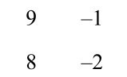
答案的第一个数字可以用4种不同的方法得出。可以把第一列中的数字相加，然后减去10（9+8-10=7）。或者把第二列中的数字相加，再加上10（-1-2+10=7），或者把对角线上的数字相加（9-2=7，或8-1=7）。答案都是7。
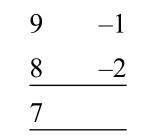
答案的第二部分通过将第二列中的两个数字相乘而得出［（-1）×（-2）=2］。所以最后答案是72。
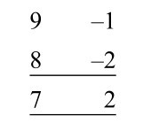
我发现这个技巧非常有用。写下一个一位数，再在它的旁边写下它与10的差，这就好像把它拆解开来，揭示出了它的内在个性，列出了自我和另一个自我。我们因此对数字的行为有了更深刻的理解。9×8计算的结果，就像它们出现的时候那样平凡，但只要划开表面，我们就会看到意想不到的优雅和秩序。这个方法不仅适用于9×8，而且适用于任意两个数。第勒塔季又在黑板上举了一个例子：8×7。
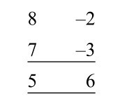
同样，第一个数字可以通过以下4种方式得出：8+7-10=5，或-2-3+10=5，或8-3=5或7-2=5。第二个数字是第二列数字的乘积，（-2）×（-3）=6。
第勒塔季的技巧是将两个一位数的乘法简化为加法以及原始数与10的差的乘积。换言之，它将两个大于5的一位数的乘法简化为加法和两个小于5的数的乘法。这意味着我们无须使用大于5的乘法表就能算出一个大于5的一位数与6、7、8、9的乘积。这对那些觉得学习乘法表有困难的人很有用。
事实上，第勒塔季所解释的技巧与文艺复兴时期就在使用的一种手指计算方法是一样的。直到20世纪50年代，法国和苏联部分地区的农场主仍在使用这种方法。两只手上的手指代表了数字6到10。要将两个数字相乘，例如8×7，就将代表8的手指与代表7的手指连在一起。用一侧的连接指上的数字，减去另一侧连接指上方的手指数量（也就是7-2或8-3），能得到5。再将两侧连接指上方的手指数量相乘，也就是2和3相乘，得到6。如上所述，答案就是56。
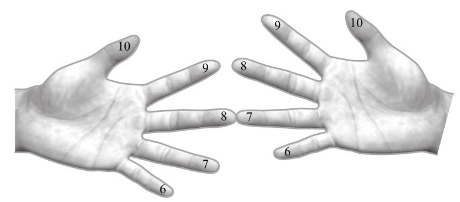
图3-3 如何用“农民手指乘法”计算8×7
第勒塔季在接下来的演讲中演示了这个方法同样适用于两位数相乘。这次他举的例子是77×97。他在黑板上写道：
77
97
然后，他没有写下77与10的差，而是写出了两个数字与100的差。（这里就用到了第二条格言。用100或更大的10的次方数减去一个数字时，只需用9减去所有位的数字，除了最后一位是用10来减，如第140页所示。）
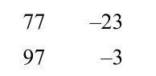
和之前一样，我们有4种方法得到第一部分的答案。他选择将两条对角线相加：77-3=97-23=74。
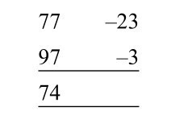
第二部分是通过将右列中的两个数字相乘得到的：（-23）×（-3）=69。
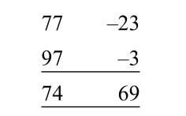
答案是7469。
第勒塔季随后展示了一个三位数的例子：888×997。这次，我们要计算出它们与1000的差。
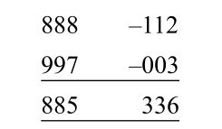
通过对角线做加法得到885，这是答案的第一部分；右列相乘得到336，这是答案的第二部分。所以，最终答案是885336。
“这些公式使求解方程变得容易得多。”第勒塔季评论道。学生们自发地发出由衷的笑声。或许这些笑声是因为这位82岁大师的举动很荒谬，他穿着长袍，教那群数学最好的学生一些基本的算术。又或者他们是出于欣赏第勒塔季的算术技巧的趣味性。阿拉伯数字中蕴藏着极为丰富的内容，即使在两个一位数相乘这样简单的水平上也是如此。然后，第勒塔季继续着他的演讲，介绍了平方、除法和代数的技巧。从讲座记录的内容判断，大家的反应似乎很热烈：“演示结束后，一个学生问他旁边的朋友：‘你觉得怎么样？’他的朋友回答说：‘太棒了！’”
回到印度后，第勒塔季被传唤到瓦拉纳西圣城。在那里，一个由印度教长老组成的特别委员会讨论了他违规离开印度的问题。讨论决定，他的这次旅行将是商羯罗查尔雅第一次也是最后一次被允许出国，而第勒塔季也接受了一个净化仪式，以防他在旅行中食用了“非印度教”的食物。两年后，第勒塔季去世。
在普里，我在所住的酒店里见到了两位吠陀数学的主要支持者，以进一步了解吠陀数学。肯尼思·威廉斯（Kenneth Williams）来自苏格兰南部，当时62岁，曾是一位数学教师，他写过几本关于这种方法的书。“这是一个设计完美的统一系统。”他对我说，“我最初发现它时，认为它就是数学应有的方式。”威廉斯是一个谦逊温和的人，他有牧师一样的前额，黑白相间的胡子被精心修剪过，松弛的眼皮下是一双蓝色的眼睛。和他在一起的是更健谈的高拉夫·特克里瓦尔（Gaurav Tekriwal），一位来自加尔各答的股票经纪人，他29岁，穿着清爽的白衬衫，戴着阿玛尼牌墨镜。特克里瓦尔是印度吠陀数学论坛的主席，这个组织运营着一个网站，会组织讲座，也销售视频光碟。
特克里瓦尔帮助我争取到了见商羯罗查尔雅的机会，他和威廉斯也陪着我。我们招呼了一辆人力车，然后出发去戈瓦尔丹寺（Govardhan Math），这个名字似乎预示了一场精彩的数学之旅，但令人失望的是，它与数学无关，它就是一座寺院。我们走过海滨和小街，街两旁摆着卖食品和带有图案花纹的丝绸的小摊。这座寺院是一座简单的砖混建筑，大小相当于一座乡村小教堂，周围有棕榈树和一个沙园，里面种着罗勒、芦荟和芒果。院子里有一棵榕树，树干上装饰着赭色的布，据说，建立这套哲学体系的8世纪印度圣人商羯罗就曾坐在那里冥想。唯一的现代风格来自一楼一个闪亮的黑色墙面，在寺庙受到穆斯林恐怖分子的威胁后，这堵防弹墙用来保护商羯罗查尔雅的房间。
普里目前的商羯罗查尔雅名叫尼查拉南达·萨拉斯瓦蒂（Nischalananda Sarasvati），他从第勒塔季的继任者那里继承了这个职位。他为第勒塔季的数学遗产感到自豪，写了5本用吠陀数学方法处理数字和计算的书。一进到寺庙，我们就来到了商羯罗查尔雅为听众准备的房间。这里唯一的家具就是一张复古的沙发，上面有深红色的座套，前面是一张矮椅子，上面有一个很大的坐垫，木制的椅背上盖着一条红色的布：这是商羯罗查尔雅的座位。我们面对着它，盘腿坐在地板上，等待圣人的到来。
萨拉斯瓦蒂穿着一件褪色的粉红色长袍走进房间。他的高级弟子站起来背诵了一段宗教经文，然后萨拉斯瓦蒂双手合十祈祷，触摸后墙上商羯罗的形象。他长着一双蓝眼睛，胡子花白，皮肤颜色很浅，秃顶。他以半莲花坐姿坐在座位上，脸上流露出一种介于安详和忧郁之间的神情。会议即将开始时，一个身穿蓝色长袍的人在我面前伸开双手拜倒在萨拉斯瓦蒂前。他像一位恼怒的祖父一样叹息，冷漠地赶走了这个人。
宗教程序要求商羯罗查尔雅说印地语，所以我请他的高级弟子当翻译。我的第一个问题是：“数学如何与灵性联系在一起？”过了几分钟，我得到了这样的回答：“在我看来，整个宇宙的创造、存在和毁灭都是以一种数学形式发生的。我们并不区分数学和灵性，我们认为数学是印度哲学的源泉。”
萨拉斯瓦蒂接着讲述了两位国王在森林中相遇的故事。一位国王告诉另一位，只要看一眼，他就能数出树上的叶子有多少。另一位国王十分怀疑，于是扯下树叶，一片一片地数起来。数完后他得到的数字刚好与第一位国王给出的数字相同。萨拉斯瓦蒂说，这个故事证明，古印度人有能力通过整体观察，而不是逐个列举，数出大量物体的数目。他补充说，这种技能连同那个时代的其他许多技能，都已经丧失。“借助静观、冥想和努力，所有这些失去的科学都可以重新获得。”他说。他还补充说，学习古代经文以拯救古代知识的过程，正是第勒塔季通过数学做到的。
在采访中，房间里坐了大约20个人，他们安静地坐在那里听商羯罗查尔雅讲话。会议接近尾声时，班加罗尔的一位中年软件顾问提到了数字1062 的重要性。他说，《吠陀》提到了这个数字，所以它一定有其意义。商羯罗查尔雅表示同意：是的，它在《吠陀》里，所以它一定有意义。这引发了关于印度政府忽视国家遗产的讨论，商羯罗查尔雅感叹，他把大部分精力都花在了保护传统文化上，因此他没有更多的时间花在数学上。今年他只挤出了15天时间用来研究数学。
第二天早饭时，我询问了那位软件顾问，为什么对数字1062 产生了兴趣，他于是谈到了古印度的科学成就。他说，数千年前，印度人对世界的了解比现在我们了解的还多。他提到他们会开飞机。当我问是否有证据证明时，他回答说，已经发现了几千年前就存在的关于飞机的石刻。这些飞机使用喷气发动机吗？他说，不，它们是用地球磁场驱动的。这些飞机由一种复合材料制成，以每小时100至150千米的低速飞行。然后，他对我的问题越来越生气，认为我渴望得到正确的科学解释是对印度传统的侮辱。最后，他不再和我说话。
虽然吠陀科学是幻想出来的，它神秘而几乎不可信，但吠陀数学是经得起推敲的，即使格言大多十分含糊而毫无意义，且接受它的故事起源于《吠陀》也需要抛开怀疑。吠陀数学中的一些技巧非常特殊，可能只能满足好奇，比如计算分数1/19对应的小数的技巧。但是有些确实很简便。
以前面的57×43为例。将这些数字相乘的标准方法是分别计算两个乘积，然后将它们相加：
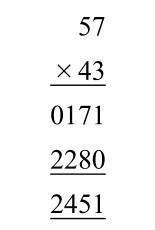
利用第三句格言“垂直和交叉”，我们可以用如下方法更容易地算出答案。
步骤1：分两行写下两个数字：
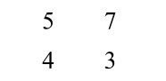
步骤2：将右列的数字相乘：7×3=21。这个数字的最后一位数字也是答案的最后一位。把它写在右列的下面，2写在下方。
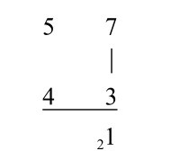
步骤3：交叉求积再相加：（5×3）+（7×4）=15+28=43。再加上上一步中的2，得到45。这个数字的最后一位是5，写在左列下面，4写在下方。
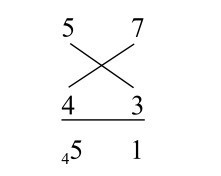
步骤4：将左列中的数字相乘，5×4=20。加上4，得到24，于是得出了最终答案：
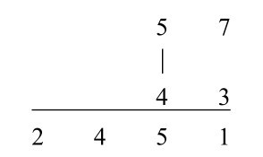
正如格言所说，数字是垂直和交叉相乘的。这种方法可以推广到任何数字的乘法运算。位数增加带来的改变仅仅是使垂直和交叉相乘的数字更多了。
例如，376×852：
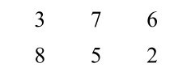
步骤1：从右列开始：6×2=12
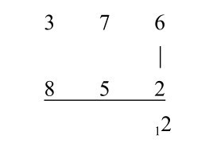
步骤2：计算个位和十位的交叉积之和，（7×2）+（6×5）=44，加上之前的1，得到45。
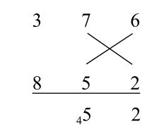
步骤3：现在我们计算个位和百位的交叉积之和，再加上十位的垂直乘积，（3×2）+（8×6）+（7×5）=89，加上前面的4，就是93。
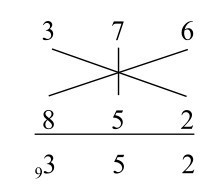
步骤4：向左移，我们现在交叉相乘前两列的数：（3×5）+（7×8）=71，加上之前的9，得到80。
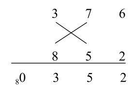
步骤5：最后，我们计算左列的垂直乘积，3×8=24，加上8，得到32。最后的答案是：320352。
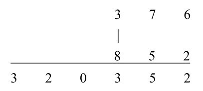
“垂直和交叉”也叫交叉相乘，它比长乘法更快，占用的空间更少，也更省力。肯尼思·威廉斯告诉我，每当他向学生解释吠陀方法时，学生们都觉得很容易理解。“他们不敢相信以前从来没人这么教过他们。”他说。学校喜欢教长乘法，因为它展示了计算的每个阶段。“垂直和交叉”则隐藏了一部分机制。威廉斯认为这不是坏事，甚至可能会帮助没那么聪明的学生。“我们必须为他们引领一条路，而不是总要求孩子们知道一切。有些孩子需要知道（乘法）是如何运作的，但有些孩子不想知道它怎么运作，他们只想知道怎么做乘法。”他说，如果因为老师坚持要教孩子一个他无法掌握的一般规则，而导致孩子最终学不会乘法，那么这个孩子就没有得到应有的教育。威廉斯补充说，对于聪明的孩子来说，吠陀数学也让算术变得更生动。“数学是一门具有创造性的学科。一旦你有了各种各样的方法，孩子们就会意识到自己也可以发明新的方法，他们也会变得有创造力。数学是一门非常有趣的学科，（吠陀数学）提出了一种教授数学的方法。”
我在第一次聆听商羯罗查尔雅的讲授时并没有听到所有预定的讨论主题，所以我有了第二次机会。在课程开始时，高级弟子说有一个公告要宣布：“我们想谈论一些关于零的事情。”他这么说道。商羯罗查尔雅用印地语以一种生动的方式讲了大约10分钟，然后弟子翻译道：“现在的数学系统认为零是不存在的实体。”他宣布：“我们想纠正这种反常。零不能被视为不存在的实体。同一个实体不可能在一个地方存在，而在其他地方不存在。”我认为，商羯罗查尔雅想说的主旨是：人们认为零在10中存在，但零本身并不存在。这是矛盾的：一个东西要么存在，要么不存在。所以零是存在的。“在吠陀文献中，零被认为是永恒的数字。”他说，“零不能被湮灭或毁灭。它是坚不可摧的基础，是一切的基础。”
到这会儿，我已经习惯了商羯罗查尔雅将数学和形而上学结合的习惯。我不再请他解释某些问题，因为我的评论要被翻译成印地语，讨论后再被翻译回英语，答案不可避免地会让我更困惑。我决定不再把注意力放在他演讲的细节上，只是从大体上去理解翻译出来的词。我仔细地端详了商羯罗查尔雅。他今天穿着一件橘色的长袍，脖子后面系了一个大结，前额涂了米黄色的颜料。我想知道像他那样生活是一种怎样的体验。我听说他的卧室没有一件家具，每天只吃清淡的咖喱，他不需要也不想拥有任何东西。的确，在会议开始的时候，一位朝圣者走近他，给了他一碗水果，他马上把水果分给了其他人。我得到了一个芒果，放在了脚边。
我试着用另一种方法体验商羯罗查尔雅的智慧，我想着“零是存在的实体”这句话，它像咒语一样在我的脑中重复着。我任凭思绪驰骋，突然间陷入了思考。一切都说得通了。“零是存在的实体”不仅仅是商羯罗查尔雅的数学观点，它也是一个简单的自我描述。坐在我面前的是“零先生”本人，血肉之中是零的化身。
这一瞬间我明白了，甚至可以说是顿悟了。在印度教思想中，“无”并不是什么都没有，“无”其实是一切。自我克制、有点儿典型的僧侣作风的商羯罗查尔雅是这种“无”的完美化身。我想到了东方灵性和数学之间的深层联系。印度哲学信奉“无”的概念，正如印度数学欣然接受零的概念一样。在一个将宇宙的本质视作虚无的文化中，产生零的概念这样一种飞跃，是再合适不过的了。
在古印度出现的零的符号完美地概括了商羯罗查尔雅传达的最主要的信息，那就是，数学与灵性是分不开的。之所以选择用圆圈代表零，是因为它描绘了天空的周期性运动。零意味着无，也意味着永恒。
印度人对发明了零十分自豪，这让擅长数学成为印度的一个国家标签。学生们必须学习20以内的乘法表，这是在英国长大的我所学的两倍。在过去的几十年里，印度人曾经被要求学习30以内的乘法表。印度一位顶级（非吠陀）数学家S. G. 达尼（S. G. Dani）证实了这一点：“小时候，我就有一种印象，学好数学是极其重要的。”他告诉我，老年人给孩子们出一些数学难题是很常见的，如果孩子们算出了正确的答案，老人会非常满意。“在印度，不管它是否有用，数学在同龄人和朋友中都很受重视。”
达尼是孟买塔塔基础研究所的资深数学教授。他留着学者式的遮秃卷发，戴着一副玳瑁有框眼镜，上唇留着小胡子。他不喜欢吠陀数学，他既不相信在《吠陀》中可以找到第勒塔季的算术方法，也不认为这些方法如他们所说的特别有用。“有很多更好的方法可以让数学变得有趣，而不是把它们代入古代的经文中。”他说，“我不相信它们让数学变得更有趣了。这些算法的优点在于快速计算，而不是让计算变得有趣，它们也没有让你理解正在发生的事情。乐趣在于结果，而不是过程。”他也不相信这种方法真的能让计算更快，因为在现实生活中，并不会出现像计算1/19的小数点后的数字是什么这样完美的问题。最后，他补充说，传统的方法方便得多。
因此我很惊讶达尼会充满感情地讲起第勒塔季关于吠陀数学的使命。在情感层面上，达尼与第勒塔季感同身受。“我对他的主要感觉是，他有一种自卑的复杂情结，他试图克服这种情结。小时候我也有。在（独立不久后的）那些日子里，印度人有一种强烈的感觉，我们要（从英国人那里）收回我们失去的东西，主要指英国人可能抢走了的手工艺品。因为我们失去了那么多，我想我们应该得到等量的回报。”
“吠陀数学是一种错误的尝试，它想要把算术归为印度所有。”
吠陀数学的一些技巧非常简单，所以我想知道，我是否可能在其他算术文献中看到过它们。我认为斐波那契的《计算之书》是个好的开始。回到伦敦后，我到图书馆找到了一本《计算之书》，翻到了里面关于乘法的章节，发现斐波那契建议的第一个方法就是“垂直和交叉”。我进行了更多研究，发现在16世纪欧洲的几本书中，使用“全部从9开始，最后从10开始”来做乘法是一种常用的技巧。（事实上，有人认为，这两种方法可能促进了人们用×作为乘法的符号。在1631年首次有人将×作为乘法符号之前，已有一些书解释了这两种方法，并画出了大大的×作为交叉线。）
第勒塔季的吠陀数学，至少在一定程度上，重新发现了文艺复兴时期一些非常常见的算术技巧。它们最初可能来自印度，也可能不是，但无论它们来自哪里，对我来说，吠陀数学的魅力在于，它通过发掘数字以及其规律和对称性，带来了纯粹的快乐。算术在日常生活中必不可少，得出正确结果很重要，这就是为什么我们会在学校里系统地学习它。然而，我们对实用性的关注让我们忽略了印度数字系统的惊人之处。这是一个巨大的进步，在此前的1000年里，所有的记数方法都没有提高到这个水平。我们想当然地使用十进制的位值系统，却没有意识到，它是多么普适、简洁而高效。
[1] 印度史诗《摩诃婆罗多》中的8位神。
[2] 英石是英制重量单位，1英石≈6.35千克。——译者注